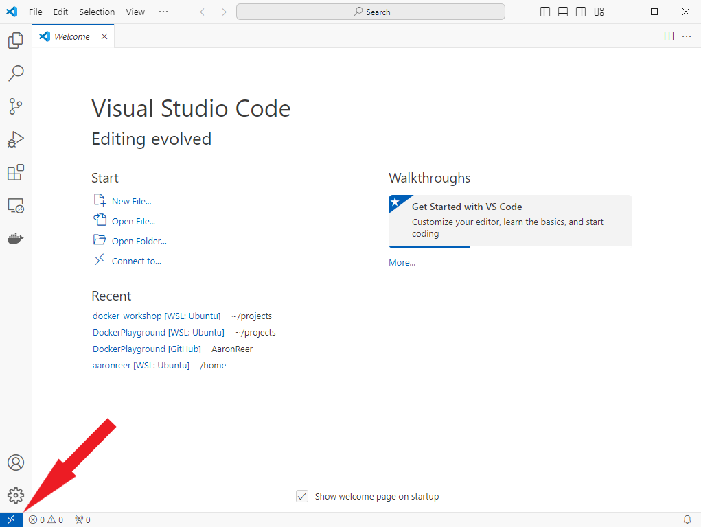
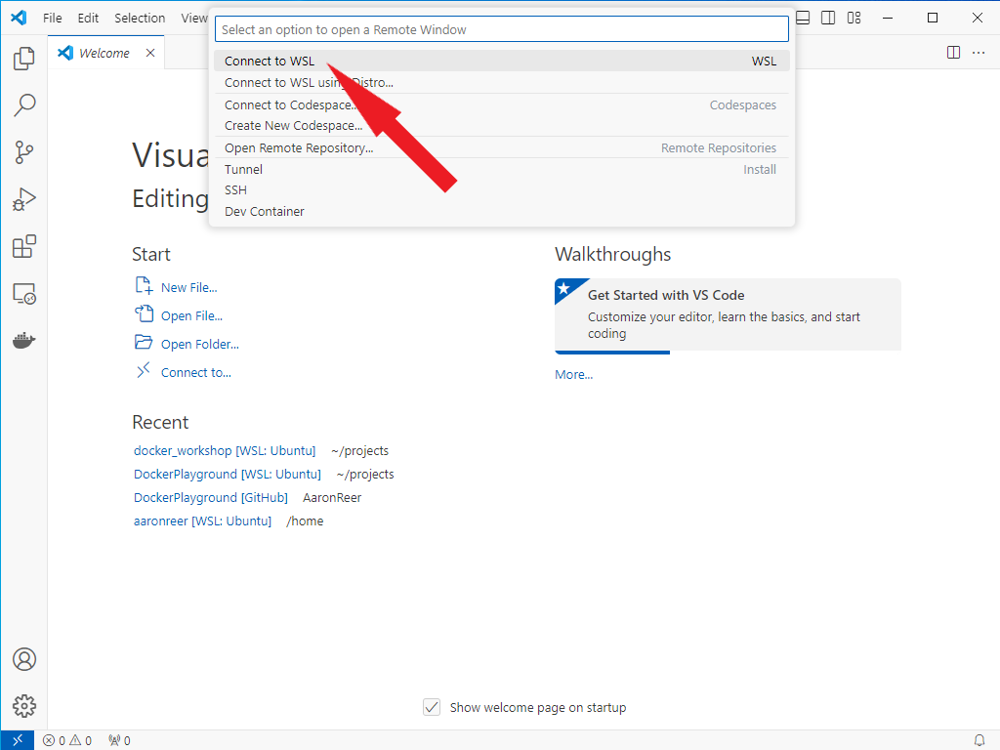

Setup for the workshop#
Most of the materials for this workshop can be found on this website, if you’d like to give input, leave comments or highlight relevant parts (publicly or privately) we encourage you to make use of the hypothes.is plugin via the annotation sidebar on the right side of the page. If you’d rather download these materials, you can do so via the {download} symbol! at the top of the respective page. You can open the respective content (.md files) via an IDE (e.g. VScode, Atom) or via Jupyter Notebooks/Lab.
We’ll come to actual installation instructions shortly, but there are a few other requirements that will need to be satisfied. Please read the whole document and follow the instructions closely.
Required software#
A command-line shell: Bash
An IDE or text editor: e.g. VSCode (recommended)
A modern browser
Mac and Linux distributions automatically provide a command line shell, simply search for terminal and you should be good to go. Windows users will have to complete a few additional steps, see the OS-specific installation instructions down below.
General things#
There are a few computing requirements for the course that are necessary:
You must have administrator access to your computer (i.e., you must be able to install things yourself without requesting IT approval).
You should have at least
20 GBof free disk space on your computer (but we would recommend more, to be safe).If you are using Windows you must be using Windows 10/11; Windows 7 and 8 will not be sufficient for this course.
Some parts of this course will make use of GitHub, so creating a GitHub account is recommended
For easier communication, we’ve created a Discord Server for this program. If you’re interested install Discord and follow this invite link.
If you foresee any of these being a problem please reach out to one of the instructors to see what steps you can take to ensure you are ready for the course start.
Some quick general notes on instructions#
If you already have some of these things installed on your computer that should (theoretically) be okay. However, you need to make sure that you can complete the steps described in
checking your installsection below without issue.This is mainly to see if your Docker installation is working!
OS-specific installation instructions#
Select the tab that corresponds to your operating system and follow the instructions therein.
Bash shell - Windows Subsystem for Linux (WSL)
Windows doesn’t come with a preinstalled bash shell. To remedy this we will rely on WSL (Windows subystems for Linux), which will provide a Unix command-line based on the latest Ubuntu distribution.
Search for
Windows Powershellin your applications; right click and selectRun as administrator. SelectYeson the prompt that appears asking if you want to allow the app to make changes to your device.Type the following into the Powershell and then press
Enter:wsl --install
Press
Enteragain when prompted to reboot your computer.You’ll find a new apllication named “Ubuntu”, this is your new command line tool. Right-click and run this app as administrator.
the first launch of the new Linux distribution may take some time as files need to be decompressed and stored
Upon opening the apllication you will be prompted to set up your Linux username and password
to make use of the command line you’ll have to bascially create an deafult user account, which gives you the ability to run sudo (Super User Do) administrative commands
the account name should be simple and contain no extra characters or spaces, e.g. your initials or first name will usually do
`Note: When entering your password nothing will appear on the screen (blind typing), but you’re input will still be registeres. Simply type a password and hit enter.
Make sure that Ubuntu is up-to-date by entering the following and hitting enter:
sudo apt update && sudo apt upgradehere you’ll be asked for the password you set in the previous step
From this point on whenever the instructions specify to “open a terminal” please assume you are supposed to open the Ubuntu application.
Important! This will create a virtual Ubuntu application on your system. The terminal will alwyays start in your Ubuntu home directory, to access your Windows file system you’ll have to use a path that should look something like this /mnt/c/Users/yourusername, where yourusername is your windows user name. If you’re unsure how to navigate through your Ubuntu file system via the terminal, check back with our chapter on [prerequisites/bash](link here).
VSCode
Go to https://code.visualstudio.com/ and click the download button, then run the
.exefile.Leave all the defaults during the installation with the following exception:
Please make sure the box labelled “Register Code as an editor for supported file types” is selected
When working with Linux under Windows using WSL you will have two different filesystems/drives since WSL will create a distinct filestystem for every Linux distribution you have installed. VSCode automatically detects WSL distributions and you can connect to them via the remote connection button (Blue button at the bottom left corner of your VSCode window). This is what it should look like:


Docker
Unfortunately, getting Docker to work on Windows is a tad more complicated.
Download the installer from this website.
Double-click Docker Desktop Installer.exe to run the installer. By default, Docker Desktop is installed at C:\Program Files\Docker\Docker.
When prompted, ensure that “Use WSL 2” instead of Hyper-V option on the Configuration page is selected.
If your system only supports one of the two options, you will not be able to select which backend to use.
Follow the instructions on the installation wizard to authorize the installer and proceed with the install.
When the installation is successful, select Close to complete the installation process.
Open Docker Dektop, agree to the the terms of service and login using your Dockerhub user credentials. Now, the Docker engine should start (if starting of the Docker engine takes more than 5 minutes, restart your computer.
If your admin account is different to your user account, you must add the user to the docker-users group:
Run
Computer Managementasadministrator.Navigate to Local Users and Groups > Groups > docker-users.
Right-click to add the user to the group. 4)Sign out and sign back in for the changes to take effect.
Bash shell
You already have it!
Depending on which version of Linux you’re running you may need to type bash inside the terminal to access it (and hit enter).
To check whether this is necessary, follow these steps:
Open a terminal and type echo $SHELL.
If it reads /bin/bash then you are all set, this should be the standard.
If not go through these following steps:
To check which shell you’re using open a terminal and type
echo $SHELL.
If it reads
/bin/bashthen you are all set!If it read `/bin/zsh we will need to make the following adjustments
Type
cat /etc/shellsand hit enterunder the list of accaeptable shells you should find
/bin/bash, note down this path (in most cases it should just read /bin/bash)
Type
chsh -s /bin/bashand hit enter (Note.chshstands simply for “change shell”, this process is harmless and reversible, no worries. For more info see the official documentation))Close and reopen your terminal
Verify that you’re now using the bash shell via
echo $SHELL
VSCode
Go to https://code.visualstudio.com/ and click the download button for either the .deb (Ubuntu, Debian) or the .rpm (Fedora, CentOS) file.
Double-click the downloaded file to install VSCode.
Docker
Installing Docker Desktop is the recommended approach for all systems. You’ll need administraror (sudo) rights to follow this process.
Install Docker Desktop by following the official installation guide for your specific distro.
Set up Docker’s package repository. See
step oneof Install using the apt repository.Download latest package
Open a terminal and install the package with apt following the instructions on the website
To Launch Docker Desktop run: `systemctl –user start docker-desktop``
alternatively to enable Docker Desktop to start at sign-in run:
systemctl --user enable docker-desktop
Close and Re-open a new terminal and type
docker run hello-world. A brief introductory message should be printed to the screen.
Bash shell
You already have it!
Newer versions of Mac OS will rely on a differnt standard, i.e. zsh, so we might need a few extra steps to setup your system.
To check which shell you’re using open a terminal and type
echo $SHELL.If it reads
/bin/bashthen you are all set!If it read `/bin/zsh we will need to make the following adjustments
Type
cat /etc/shellsand hit enterunder the list of accaeptable shells you should find
/bin/bash, note down this path (in most cases it should just read /bin/bash)
Type
chsh -s /bin/bashand hit enter (Note.chshstands simply for “change shell”, this process is harmless and reversible, no worries. For more info see the official documentation))Close and reopen your terminal
Verify that you’re now using the bash shell via
echo $SHELL
VSCode
Go to https://code.visualstudio.com/ and click the download button.
Unzip the downloaded file (e.g.,
VSCode-darwin-stable.zip) and moving the resultingVisual Studio Codefile to your Applications directory.
Docker
Go to https://hub.docker.com/editions/community/docker-ce-desktop-mac/ and press “Get Docker”.
Open the “Docker.dmg” file that is downloaded and drag and drop the icon to the Applications folder
Open the Docker application and enter your password. An icon will appear in the status bar in the top-left of the screen. Wait until it reads “Docker Desktop is now up and running!”
Open a new terminal and type
docker run hello-world. A brief introductory message should be printed to the screen.
(The above step-by-step Docker instructions are distilled from here. If you have questions during the installation procedure please check that link for potential answers!)
Note: If the instructions aren’t working and you have spent more than 15-20 minutes troubleshooting on your own, reach out on the #help-installation channel on the Discord server (info below) with the exact problems you’re having. One of the instructors will try and get back to you quickly to help resolve the situation. If they’re unable to help via Discord, you may be directed to attend one of the installation office hours.
Checking your install#
Simply open a new terminal and type docker run hello-world.
A brief introductory message should be printed to the screen.
GitHub account#
Go to join/ and follow the on-screen instructions to create an account. It is a good idea to associate this with your university e-mail (if you have one) as this will entitle you to sign up for the GitHub Student Developer Pack or GitHub for teachers which come with some nice free bonuses.
Discord#
Go to https://discord.com/ and download and install Discord. Please note, that you can also use Discord through your browser if you don’t want to download it. To join the workshop server follow this invite link.
Modern web browser#
Install Firefox or Chrome (Safari will also work.) Microsoft Edge is not modern, despite what Microsoft might try and otherwise tell you.
Enter the matrix#
Once you have reached this point, you should be ready the enter the matrix and follow the workshop in your preferred way. Congrats, fantastic work!

https://media1.tenor.com/images/e5c21d98f56c4af119b4e14b6a9df893/tenor.gif?itemid=4011236